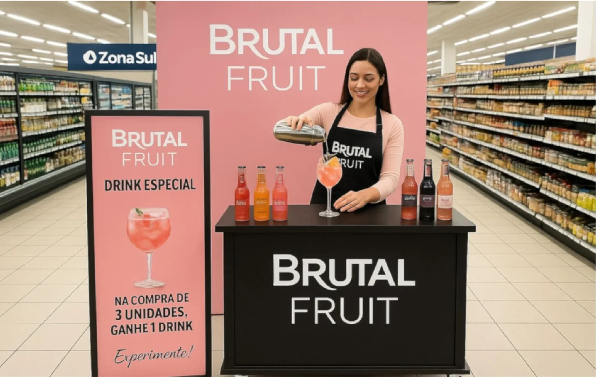
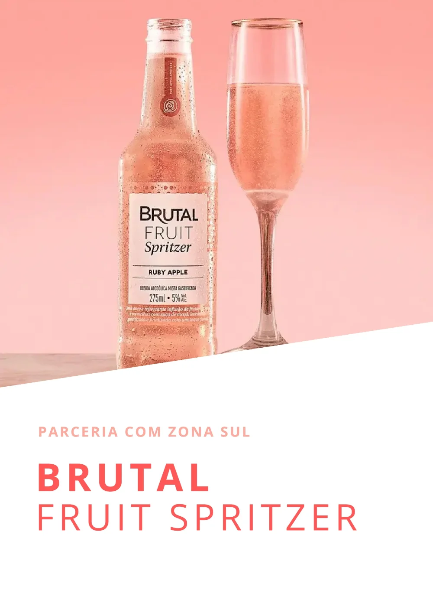
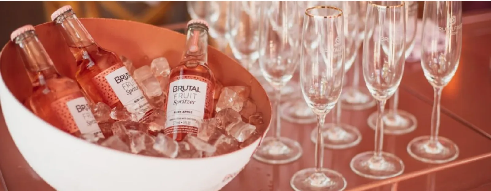

2× por mês, às sextas
Um bar de degustação montado dentro do Zona Sul, no clima de início de fim de semana.
(05) CASE · TRADE MARKETING · VAREJO
Como levar o Brutal Fruit Spritzer, da Ambev, ao lugar certo e na hora certa: da escolha do varejista ao bar de degustação dentro do Zona Sul.
O DESAFIO
Levar uma bebida pensada para um público jovem e majoritariamente feminino ao lugar certo e na hora certa, sem perder o posicionamento leve e sofisticado da marca.
PATH TO MARKET
Produção com qualidade e padronização desde a origem.
Centros de distribuição, operadores logísticos e transportadoras parceiras.
Lojas em bairros de alto fluxo e operação digital consolidada.
Encontra o produto perto de casa, no caminho do trabalho ou em poucos cliques.
ESTRATÉGIA: DISTRIBUIÇÃO SELETIVA O foco não é estar em todo lugar, mas nos pontos de venda certos, para proteger a imagem da marca e manter a bebida ligada a momentos especiais.
PLANO DE AÇÃO

Um bar de degustação montado dentro do Zona Sul, no clima de início de fim de semana.
Quem compra 3 unidades leva um cardápio com receitas de drinks para fazer em casa.
Aumentar a experimentação e o volume de vendas nos dias de ação e fortalecer a lembrança de marca.

